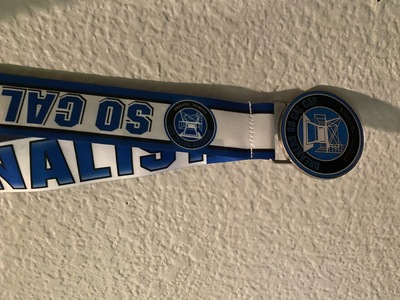
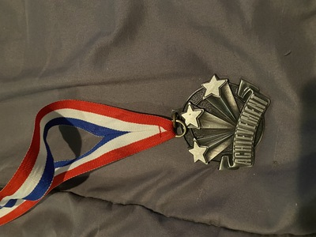
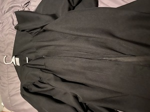

Elena Rivera
I have dealt with many cases over the years, the most rewarding
part of my career is that I believe in each and everyone of my clients. It is my job
to make sure that gove every client a fair chance and fight for their needs. I always
treat everyone with respect and never judge one from their story, I try to pull out a win to the best
of my ability. Without believing in each and every one of my clients I would not be where I am at today
it takes hard work and dedication to be a lawyer, however it takes hope and strength to be a great lawyer.
Many would say that lawyers are great liars, personally I find those that believe this have never met a lawyer themselves,
lawyers are anything but liars, lawyers try to expose the truth in hopes that it is strong enough to help their clients win justice and the favor if the court.
Without passion for the work one can never achieve their goals they want to achieve as a lawyer, it takes almost a decade to become a lawyer and from the start one is struggaling and
batteling to reach to the top and have their name heard. Being a lawyer means having hope despite others personal beliefs, when one
tells you no its a lost case you have to be the one to keep batteling and prove others wrong. The best part of being a lawyer is saving the innocent from a sentencing that
they do not deserve, many people in our justice system today were incriminated off of false instances and because their lawyer was not able to provide that hope for them; they are in jail today
and have been for years with no one to help them and just years in the same place that never end. Without inspiring lawyers our justice system would be very lost, they fight for justice in the name of the
law and the people, they are the ones who convince the public who the real criminal is. Special cases dating closer to the seventies and on when miniorities were treated horribly by cops, many cops who had it out for miniorities
falsly incriminated lots of people and have confined the individuals to the limitations of jail. Cops like these in the past have ruined the lives of each human they falsly incriminated and did so without a second thought of what to what they
had done except for satisfaction because they had accomplished their vengance. It is sad to see that our justice system used to be so weak that a cop could send away somebody for life because he did not like the color of an individuals skin. Their are men and women
who had to sit in jail for multiple decades because they were Black or Mexican, or another minority race. Cops were given enough power to destroy the lives of those they disliked not because the individual was a criminal and did unmentionable things to innocent people but because
the color of their skin bothered the cop. Although the justice system has become much stronger today, lawyers have been the sole reason that innocent people are not falsly accused, without the will of lawyers and their inner morality factor many innocent minorities would be in jail today as they were thirty plus years ago.
Experience
Volunteer
• Helped manage Gymnastics competitions
• Would set up and put away competitions
• Would make sure customers had paid would see them to the door
Prom Assistant
• Assisted an assigned partner at the special needs 2019 prom
• Made sure my partner had the best prom and the most special night
•Took care of any medical conditions and that during prom who health was at its best
Education
UC Riverside
Portfolio




.